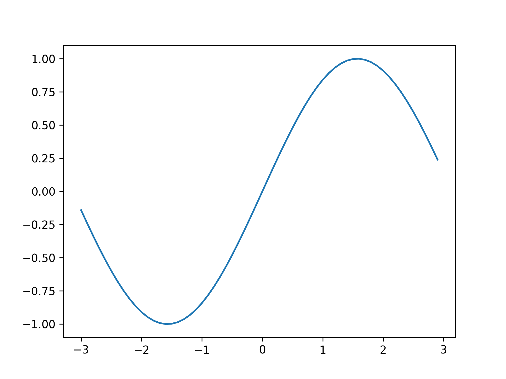
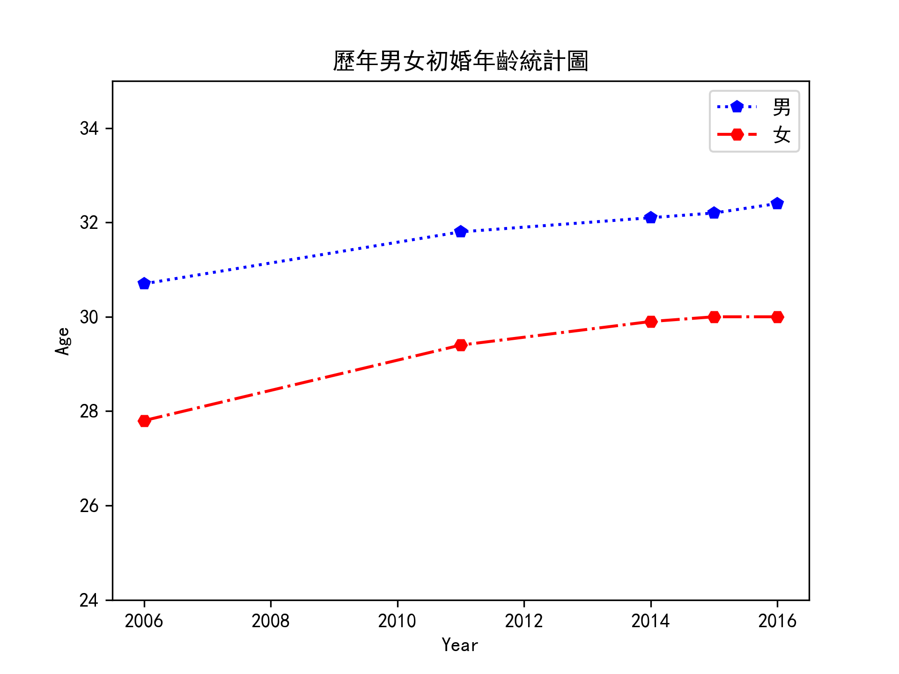
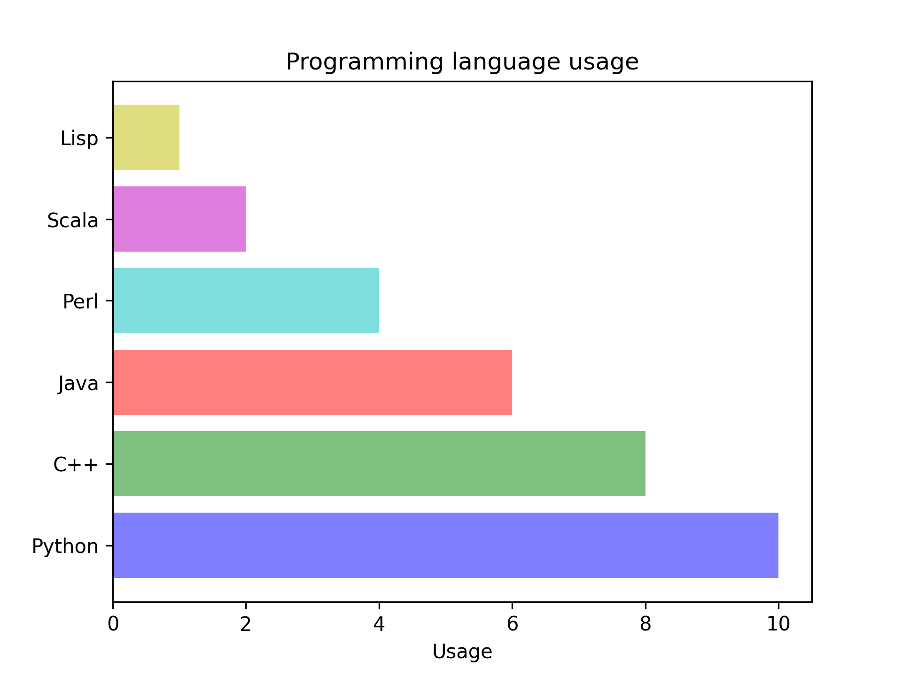

Matplotlib
Table of Contents

1. Matplotlib 簡介
- 官網: https://matplotlib.org/3.2.1/index.html#
- Matplotlib 是利用 Python 所實作的繪圖套件，其中包含兩個最重要的模組: pylab 和 pyplot。
- pylab 已經幾乎實作了在學術界最常用的套件 — Matlab 所支援的繪圖功能，或者可以說 pylab 其實就是 Matlab 的 Python 版本；
- pyplot 是把 pylab 再加上 Numpy，讓使用者在使用 pyplot 時，可以直接呼叫 Numpy 的函式做計算後再以圖型的方式呈現。1
- 為 Python 最多人使用的 2D 繪圖工具
- 優點：圖形美觀、類型多、相容於 Matlab
- 官方社群網站 https://matplotlib.org/
- 維基百科 https://zh.wikipedia.org/wiki/Matplotlib
2. Matplotlib 基本語法
2.1. 基本語法
- import matplotlib.pyplot as plt
plt.plot()函式為 matplotlib.pyplot 模組畫線條方法，其語法如下
plt.plot( [x座標資料,] y座標資料 [, 參數1, 參數2, ...] )
- plt.plot()官網說明
2.2. 範例:簡單的 sin 圖形
- np.sin()函式為 Numpy 模組求正弦值
- plt.show( )函式用來顯示圖形
- 請到官網看看除了 sin()還有哪些 function 可以玩，畫出幾個函式曲線
1: import matplotlib.pyplot as plt 2: import numpy as np 3: 4: x = np.arange(-3, 3, 0.1) 5: plt.clf() 6: plt.plot(x, np.sin(x)) 7: plt.show() 8: 9: # 若要存圖，要先存檔再顯示 # for pycharm 10: # plt.savefig('images/SimpleSin.png', dpi=300) 11: # plt.show() # for PyCharm

Figure 1: 簡單的 sin 圖形
2.3. plot 官方語法
plot()函式控制輸出主要有以下兩類參數：
- fmt 字串
- kwarg 參數
基本語法如下:
- plot([x], y, [fmt], *, data=None, **kwargs)
- plot([x], y, [fmt], [x2], y2, [fmt2], …, **kwargs)
3. 參數控制
3.1. fmt 控制參數
- 可選引數 fmt 是定義基本格式 (如顏色、標記和 linestyle) 的簡便方法
- plot(): fmt 字串
| 字元 | 顏色 | 字元 | 標記 | 字元 | 線條 |
|---|---|---|---|---|---|
| ’b’ | 藍 | ’.’ | 點 | ’–’(兩個-) | 虛線 |
| ’g’ | 綠 | ’o’ | 圓圈 | ’-’ | 實線 |
| ’r’ | 紅 | ’v’ | 三角形(下) | ’-.’ | -.-.-.-. |
| ’c’ | 青 | ’^’ | 三角形(上) | ||
| ’m’ | 洋紅 | ’<’ | 三角形(左) | ||
| ’y’ | 黃 | ’>’ | 三角形(右) | ||
| ’k’ | 黑 | ’s’ | 正方形 | ||
| ’w’ | 白 | ’p’ | 五邊形 | ||
| ’*’ | * | ||||
| ’+’ | + | ||||
| ’x’ | x | ||||
| ’d’ | 鑽石 |
3.1.1. Demo #1
1: import matplotlib.pyplot as plt 2: import numpy as np 3: 4: x = np.arange(-3, 3, 0.1) 5: plt.clf() 6: plt.plot(x, np.sin(x), 'r+') 7: plt.show() 8: 9: # saving figure 10: # plt.savefig('images/SimpleSin2.png', dpi=300) 11:

Figure 2: 簡單的 sin 圖形
3.1.2. Demo #2
1: import matplotlib.pyplot as plt 2: import numpy as np 3: 4: x = np.arange(-3, 3, 0.1) 5: plt.clf() 6: plt.plot(x, np.cos(x), 'c-.') 7: plt.show() 8: 9: # saving figure 10: # plt.savefig('images/SimpleCos.png', dpi=300)
Figure 3: 簡單的 cos 圖形
3.1.3. Demo: 多組資料
1: import matplotlib.pyplot as plt 2: import numpy as np 3: 4: x1 = np.arange(-3, +3, 0.1) 5: y1 = np.sin(x1) 6: y2 = np.cos(x1) 7: 8: #plt.plot(x1, y1, 'r^--', x1, y2, 'go-') 9: plt.plot(x1, y1, 'r^--', x1, y2, 'go-') 10: plt.savefig('mline.png', dpi=300)
Figure 4: 多組圖形
3.2. kwgarg 參數
3.2.1. kwarg 為 Line2D 屬性：color, linestyle, marker, label, linewidth, ….
- kwargs 用於指定諸如線條標籤 (用於自動圖例)、線寬、抗鋸齒、標記面顏色等屬性
- 若 fmt 和 kwarg 設定衝突時，以 kwarg 為主
3.2.2. color
- 單字，如 g：color = ’lime’
- 字母，如 g：color = ’k’
- 色碼，如 g：color = ’#FF0000’
- RGB 值(0~g1 之間)，如：color = (1, 0, 0)
| 字元 | 顏色 |
|---|---|
| ’b’ | 藍色 |
| ’g’ | 綠色 |
| ’r’ | 紅 |
| ’c’ | 青色 |
| ’m’ | 品紅 |
| ’y’ | 黃色 |
| ’k’ | 黑 |
| ’w’ | 白色 |
3.2.3. marker
| 字元 | 描述 |
|---|---|
| ’.’ | 點標記 |
| ’,’ | 畫素標記 |
| ’o’ | 圓圈標記 |
| ’v’ | triangle_down 標記 |
| ’^’ | triangle_up 標記 |
| ’<’ | triangle_left 標記 |
| ’>’ | triangle_right 標記 |
| ’1’ | tri_down 標記 |
| ’2’ | tri_up 標記 |
| ’3’ | tri_left 標記 |
| ’4’ | tri_right 標記 |
| ’s’ | 方形標記 |
| ’p’ | 五角大樓標記 |
| ’*’ | 星形標記 |
| ’h’ | hexagon1 標記 |
| ’H’ | hexagon2 標記 |
| ’+’ | 加號標記 |
| ’x’ | x 標記 |
| ’D’ | 鑽石標記 |
| ’d’ | thin_diamond 標記 |
| ’|’ | 圴標記 |
| ’_’ | 修身標記 |
3.2.3.1. linestyle
| 字元 | 描述 |
|---|---|
| ’-’ | 實線樣式 |
| ’–’ | 虛線樣式 |
| ’-.’ | 破折號-點線樣式 |
| ’:’ | 虛線樣式 |
3.2.3.2. label
- fg 呈現線條標籤，如 label = ’y = x^2’
- 需搭配 pglt.legend()函式方能呈現 label
3.2.4. 其他參數
- x / y 座標範圍：plt.xlim(起始值, 終止值) / plt.ylim(起, 止)
- 圖表標題：plt.title(字串)
- x / y 座標標題：plt.xlabel(字串) / plt.ylabel(字串)
- 顯示 kwarg 參數裡的 label：plt.legend()
3.2.5. kwarg 示範
1: import matplotlib.pyplot as plt 2: import numpy as np 3: 4: x = np.arange(-3, 3, 0.5) 5: plt.clf() 6: plt.plot(x, np.cos(x), color='c', linestyle='--', marker='p') 7: plt.xlim(-4, 4) 8: plt.xlabel('This is x label') 9: plt.title("This is Title", fontsize=16) 10: 11: plt.savefig('images/kwarg.png', dpi=300) 12:

Figure 5: kwarg 參數控制
4. 中文問題
4.1. 在 PyCharm 中使用中文
- 解決方案
1: # 解決中文問題 2: plt.rcParams['font.sans-serif'] = ['Arial Unicode MS'] # 步驟一（替換系統中的字型，這裡用的是Mac OSX系統） 3: plt.rcParams['axes.unicode_minus'] = False # 步驟二（解決座標軸負數的負號顯示問題）
- 實際示例

Figure 6: 簡單的折線圖及圖例
4.2. 在 colab 中使用中文
- 在 ipynb 最上方先加入下列 cell
1: # Colab 進行matplotlib繪圖時顯示繁體中文 2: # 下載台北思源黑體並命名taipei_sans_tc_beta.ttf，移至指定路徑 3: !wget -O TaipeiSansTCBeta-Regular.ttf https://drive.google.com/uc?id=1eGAsTN1HBpJAkeVM57_C7ccp7hbgSz3_&export=download 4: 5: import matplotlib as mpl 6: import matplotlib.pyplot as plt 7: from matplotlib.font_manager import fontManager 8: 9: fontManager.addfont('TaipeiSansTCBeta-Regular.ttf') 10: mpl.rc('font', family='Taipei Sans TC Beta')
5. Legend
1: import matplotlib.pyplot as plt 2: import numpy as np 3: 4: x = np.arange(-3, 3, 0.1) 5: plt.clf() 6: plt.plot(x, np.sin(x)) 7: plt.plot(x, np.cos(x)) 8: #加入圖例 9: plt.legend(["sin", "cos"], loc="upper left") 10: 11: 12: # 若要存圖，要先存檔再顯示 # for PyCharm 13: plt.savefig('images/sincoslegend.png', dpi=300)
Figure 7: Caption
6. Line Chart
6.1. Demo #1
1: import matplotlib.pyplot as plt 2: import numpy as np 3: 4: x1 = [1, 2, 3, 4, 5, 6] 5: y1 = [1, 2, 3, 4, 5, 6] 6: x2 = np.arange(0, 3, 0.3) 7: x3 = np.arange(8).reshape(2, 4) 8: print(x3) 9: print(x3+3) 10: plt.plot(y1, 'c-p', x2, x2**2, 'ms:', x3, x3+3, '-*') 11: plt.savefig('line2.png', dpi=300)
[[0 1 2 3] [4 5 6 7]] [[ 3 4 5 6] [ 7 8 9 10]]
Figure 8: 簡單的折線圖形 2
6.2. Demo #2
1: import matplotlib.pyplot as plt 2: import numpy as np 3: 4: def angdeg(x): 5: return 1.2*x+3 6: 7: x = np.arange(0, 21, 1) 8: plt.rcParams['font.sans-serif'] = ['Arial Unicode MS'] # 步驟一（替換系統中的字型，這裡用的是Mac OSX系統） 9: plt.rcParams['axes.unicode_minus'] = False # 步驟二（解決座標軸負數的負號顯示問題） 10: ax = plt.figure().gca() 11: plt.plot(x, angdeg(x), color='r', linestyle='--', linewidth=3) 12: plt.xlabel('本月闖禍次數', fontsize=16) 13: plt.ylabel('媽媽生氣程度', fontsize=16) 14: plt.xlim(0,21) 15: ax.set_xticks(x) 16: plt.savefig('images/angrymam-1.png', dpi=300)
Figure 9: Angry Mam
6.3. Demo #3
1: import matplotlib.pyplot as plt 2: import numpy as np 3: 4: def angdeg(x): 5: return 500+(x**4)/100 6: 7: x = np.arange(0, 21, 1) 8: #plt.cla() 9: plt.rcParams['font.sans-serif'] = ['Arial Unicode MS'] # 步驟一（替換系統中的字型，這裡用的是Mac OSX系統） 10: plt.rcParams['axes.unicode_minus'] = False # 步驟二（解決座標軸負數的負號顯示問題） 11: 12: ax = plt.figure().gca() 13: plt.plot(x, angdeg(x), color='r', linestyle='--', linewidth=3) 14: 15: plt.xlabel('本月闖禍次數', fontsize=16) 16: plt.ylabel('媽媽生氣程度', fontsize=16) 17: plt.xlim(0,21) 18: plt.ylim(0,2201) 19: ax.set_xticks(x) 20: plt.savefig('images/angrymam-2.png', dpi=300)
Figure 10: Angry Mam
6.4. Demo #4
1: import matplotlib.pyplot as plt 2: import numpy as np 3: import pandas as pd 4: 5: def angdeg(x): 6: return x**4 7: def l2c(x): 8: if x == True: 9: return 'r' 10: else: 11: return 'g' 12: 13: np.random.seed(9527) 14: x = np.random.randint(21, size=20) 15: y = np.random.randint(21, size=20) 16: z = x + y < 20 17: colors = list(map(lambda x: 'g' if x == True else 'r', z)) 18: #colors = list(map(l2c, z)) 19: labels = list(map(lambda x: '挨揍' if x == True else '平安', z)) 20: plt.rcParams['font.sans-serif'] = ['Arial Unicode MS'] # 步驟一（替換系統中的字型，這裡用的是Mac OSX系統） 21: plt.rcParams['axes.unicode_minus'] = False # 步驟二（解決座標軸負數的負號顯示問題） 22: 23: ax = plt.figure().gca() 24: 25: #plt.scatter(x, y, c = colors) 26: rc = [i for i in range(len(colors)) if colors[i] == 'r'] 27: gc = [i for i in range(len(colors)) if colors[i] == 'g'] 28: 29: plt.scatter(x[rc], y[rc], c = 'r') 30: plt.scatter(x[gc], y[gc], c = 'g') 31: plt.xlabel('因闖禍受傷程度', fontsize=16) 32: plt.ylabel('因闖禍導致損失金額', fontsize=16) 33: ax.set_xticks(range(21)) 34: ax.set_yticks(range(21)) 35: plt.legend(['處罰','平安']) 36: plt.plot(x, 20-x, linewidth=3) 37: plt.savefig('images/angrymam-3.png', dpi=300)
Figure 11: Angry Mam
6.5. Demo #5
1: import matplotlib.pyplot as plt 2: import numpy as np 3: import pandas as pd 4: 5: def angdeg(x): 6: return x**4 7: def l2c(x): 8: if x == True: 9: return 'r' 10: else: 11: return 'g' 12: def mycurv(x): 13: return 5 + (2 ** (19-float(x)))/6000 14: 15: np.random.seed(9527) 16: x = np.random.randint(21, size=20) 17: y = np.random.randint(21, size=20) 18: y1 = list(map(mycurv, x)) 19: print('y:',y) 20: print('y1:',y1) 21: z = y > y1 22: print('z:', z) 23: colors = list(map(lambda x: 'g' if x == True else 'r', z)) 24: colors = list(map(l2c, z)) 25: #labels = list(map(lambda x: '挨揍' if x == True else '平安', z)) 26: plt.rcParams['font.sans-serif'] = ['Arial Unicode MS'] # 步驟一（替換系統中的字型，這裡用的是Mac OSX系統） 27: plt.rcParams['axes.unicode_minus'] = False 28: # 步驟二（解決座標軸負數的負號顯示問題） 29: ax = plt.figure().gca() 30: # 31: ##plt.scatter(x, y, c = colors) 32: rc = [i for i in range(len(colors)) if colors[i] == 'r'] 33: gc = [i for i in range(len(colors)) if colors[i] == 'g'] 34: 35: plt.scatter(x[rc], y[rc], c = 'r') 36: plt.scatter(x[gc], y[gc], c = 'g') 37: plt.xlabel('因闖禍受傷程度', fontsize=16) 38: plt.ylabel('因闖禍導致金錢損失', fontsize=16) 39: ax.set_xticks(x) 40: plt.legend(['處罰 41: ','平安']) 42: x1=np.arange(21,0,-1, dtype=float) 43: print(x1) 44: 45: plt.plot(x1, 5 + (2 ** (19-x1))/6000, linewidth=3) 46: plt.xlim(0,21) 47: plt.ylim(0,21) 48: ax.set_xticks(range(21)) 49: ax.set_yticks(range(21)) 50: plt.savefig('images/angrymam-4.png', dpi=300)
y: [15 5 1 1 16 12 6 3 14 15 6 17 2 12 0 11 6 7 9 13] y1: [48.690666666666665, 5.341333333333333, 5.001333333333333, 5.001333333333333, 5.021333333333334, 5.341333333333333, 5.001333333333333, 48.690666666666665, 5.000083333333333, 5.042666666666666, 5.1706666666666665, 26.845333333333333, 5.001333333333333, 5.010666666666666, 5.021333333333334, 92.38133333333333, 48.690666666666665, 7.730666666666666, 6.365333333333333, 26.845333333333333] z: [False False False False True True True False True True True False False True False False False False True False] [21. 20. 19. 18. 17. 16. 15. 14. 13. 12. 11. 10. 9. 8. 7. 6. 5. 4. 3. 2. 1.]
Figure 12: Angry Mam
6.6. [課堂練習]繪製折線圖 TNFSH
- 利用 list 繪製
- x1 = [1, 2, 3, 4, 5, 6]
- y1 = [1, 2, 3, 4, 5, 6]
- x1 = [1, 2, 3, 4, 5, 6]
- 執行 plt.plot(y1) 和 plt.plot(x1, y1) 有何差別??
- 利用 numpy 繪製
- x2 = np.arange(0, 3, 0.01)
- x2 = np.arange(0, 3, 0.01)
- 執行 plt.plot(x2, x2**2)看看畫出什麼圖形??
- 為圖表加上標記、線條標籤，換線條顏色、線條樣式
6.7. [課堂作業]圖表美化 TNFSH
6.7.1. 請將下列資料繪成折線圖(男女折線不同顏色、樣式，加標記)
| 初婚年齡 | 2006 | 2011 | 2014 | 2015 | 2016 |
|---|---|---|---|---|---|
| 男 | 30.7 | 31.8 | 32.1 | 32.2 | 32.4 |
| 女 | 27.8 | 29.4 | 29.9 | 30.0 | 30.0 |
- 圖表標題: Age of first marriage
- 座標軸標題: x ⇒ Year、y ⇒ Age
- 線條標籤: 男 ⇒ Male、女 ⇒ Female
- 結果示例
Figure 13: 簡單的折線圖及圖例
7. Bar chart
- 語法
plt.bar( x座標資料, y座標資料 [, 參數1, 參數2, ...] ) plt.barh( x座標資料, y座標資料 [, 參數1, 參數2, ...] )
- DEMO
1: import matplotlib.pyplot as plt 2: import numpy as np 3: 4: objects = ('Python', 'C++', 'Java', 'Perl', 'Scala', 'Lisp') 5: performance = [10,8,6,4,2,1] 6: 7: plt.barh(objects, performance, align='center', color = ['b','g','r','c','m','y'], alpha=0.5) 8: plt.xlabel('Usage') 9: plt.title('Programming language usage') 10: #plt.show() 11: plt.savefig('barChart.png', dpi=300)

Figure 14: barChart Demo
8. Pie chart
8.1. 語法：
plt.pie( 比例列表 [, 參數 1, 參數 2, …] )
8.2. 參數：
- colors：各子圖顏色，多以 list 表示
- labels：各子圖標籤，多以 list 表示
- explode：各子圖分離突出比例，0.1 代表分離 10%，多以 list 表示
- autopct：顯示各子圖比例值，格式為%x.y%%
- startangle：繪製起始角度，預設為 0 (與三角函數角度相同)
- 若要以正圓形繪製，請再加上 plt.axis(’equal’)
- legend location
| Location String | Location Code |
|---|---|
| ’best’ | 0 |
| ’upper right’ | 1 |
| ’upper left’ | 2 |
| ’lower left’ | 3 |
| ’lower right’ | 4 |
| ’right’ | 5 |
| ’center left’ | 6 |
| ’center right’ | 7 |
| ’lower center’ | 8 |
| ’upper center’ | 9 |
| ’center’ | 10 |
8.3. 範例
1: import matplotlib.pyplot as plt 2: import numpy as np 3: 4: parts = [35.35, 23, 26.65, 15] 5: labels = ['Harrison', 'Vanessa', 'James', 'Ruby'] 6: colors = ['red', 'lightblue', 'purple', 'yellow'] 7: explodes = [0.1, 0, 0, 0.1] 8: plt.pie(parts, colors = colors, labels = labels, explode = explodes, autopct = '%3.2f%%') 9: plt.axis('equal') 10: plt.legend(loc='upper left') 11: 12: #plt.show() 13: plt.savefig('simplePie.png', dpi=300)

Figure 15: 簡單的 pie chart
10. 文字註解: plt.text()
10.1. 語法
plt.text( x相對座標, y相對座標 , 文字字串 [, 其它參數] )- 參考資料
10.2. 範例
1: import matplotlib.pyplot as plt 2: 3: x = [1, 2, 3, 4, 5, 6, 7, 8] 4: y = [1, 4, 9, 16, 25, 36, 49, 64] 5: plt.plot(x, y, 'r--') 6: for x, y in zip(x, y): 7: plt.text(x-0.2, y+0.6, '(%d, %d)' %(x, y)) 8: #plt.show() 9: plt.savefig('simpleText.png', dpi = 300)

Figure 16: 簡單的文字註解
11. 子圖表: plt.subplot()
matplotlib 下, 一個 Figure 對象可以包含多個子圖(Axes), 可以使用 subplot() 快速繪製, 其調用形式如下 :
11.1. subplot 語法
subplot(numRows, numCols, plotNum)
- 圖表的整個繪圖區域被分成 numRows 行和 numCols 列
- 然後按照從左到右，從上到下的順序對每個子區域進行編號，左上的子區域的編號為 1
- plotNum 參數指定創建的 Axes 對象所在的區域
- 如果 numRows, numCols 和 plotNum 這三個數都小於 10 的話, 可以把它們縮寫為一個整數, 例如 subplot(323) 和 subplot(3,2,3) 是相同的.
11.2. subplots_adjust 語法
- subplots_adjust(left=None, bottom=None, right=None, top=None, wspace=None, hspace=None)
- left = 0.125 # 子圖(subplot)距畫板(figure)左邊的距離
- right = 0.9 # 右邊
- bottom = 0.1 # 底部
- top = 0.9 # 頂部
- wspace = 0.2 # 子圖水平間距
- hspace = 0.2 # 子圖垂直間距
11.3. 範例2
1: import numpy as np 2: import matplotlib.pyplot as plt 3: 4: from matplotlib.ticker import NullFormatter # useful for `logit` scale 5: 6: # Fixing random state for reproducibility 7: np.random.seed(19680801) 8: 9: # make up some data in the interval ]0, 1[ 10: y = np.random.normal(loc=0.5, scale=0.4, size=1000) 11: y = y[(y > 0) & (y < 1)] 12: y.sort() 13: x = np.arange(len(y)) 14: 15: # plot with various axes scales 16: plt.figure() 17: 18: # linear 19: plt.subplot(221) 20: plt.plot(x, y) 21: plt.yscale('linear') 22: plt.title('linear') 23: plt.grid(True) 24: 25: 26: # log 27: plt.subplot(222) 28: plt.plot(x, y) 29: plt.yscale('log') 30: plt.title('log') 31: plt.grid(True) 32: 33: 34: # symmetric log 35: plt.subplot(223) 36: plt.plot(x, y - y.mean()) 37: plt.yscale('symlog', linthreshy=0.01) 38: plt.title('symlog') 39: plt.grid(True) 40: 41: # logit 42: plt.subplot(224) 43: plt.plot(x, y) 44: plt.yscale('logit') 45: plt.title('logit') 46: plt.grid(True) 47: # Format the minor tick labels of the y-axis into empty strings with 48: # `NullFormatter`, to avoid cumbering the axis with too many labels. 49: plt.gca().yaxis.set_minor_formatter(NullFormatter()) 50: 51: # Adjust the subplot layout, because the logit one may take more space 52: # than usual, due to y-tick labels like "1 - 10^{-3}" 53: plt.subplots_adjust(top=0.92, bottom=0.08, left=0.10, right=0.95, hspace=0.25, wspace=0.35) 54: 55: plt.savefig('simpleSubplot.png', dpi = 300)
Figure 17: 簡單的子圖表
12. [課堂練習]實作 TNFSH
12.1. 方程式圖形
輸入 a, b, c，畫出曲線圖：y=\(ax^2+bx+c\)，參考結果如下:
Figure 18: 方程式曲線圖
12.2. 成績處理
請複製底下的程式碼:
import numpy as np scores = [[ 26, 53, 49, 72, 38, 14, 95, 49, 100, 77, 30, 23, 50, 47, 45, 44, 52, 10, 72, 11, 61, 91, 8, 39, 70, 74, 40, 45, 86, 9,], [ 68, 100, 97, 80, 63, 31, 100, 45, 92, 100, 54, 20, 78, 52, 62, 65, 85, 48, 90, 60, 100, 100, 56, 56, 62, 100, 37, 55, 91, 46,], [ 95, 24, 49, 78, 68, 28, 80, 85, 93, 84, 70, 95, 46, 12, 10, 38, 9, 97, 59, 85, 38, 87, 15, 76, 71, 59, 22, 11, 47, 63,], [100, 26, 50, 86, 84, 26, 93, 92, 92, 92, 96, 100, 68, 14, 50, 51, 44, 100, 69, 100, 35, 93, 40, 71, 91, 78, 54, 19, 43, 91,], [100, 48, 69, 97, 96, 58, 100, 92, 92, 84, 86, 100, 54, 33, 62, 67, 25, 100, 82, 100, 73, 91, 35, 82, 83, 75, 45, 41, 48, 76,]]
這是一個班級(30名學生)的期中考成績，五科科目名稱: 國文、英文、數學、理化、史地。
作業要求: 以subplot生成4個子圖(2*2)，每個子圖25分:
- 左上圖為五科平均分數的bar chart
- 右上圖為第一位學生的五科分數組成的pie chart
- 左下圖為國、英兩科分數所組成的scatter chart
- 右下圖為數、理化兩科分數所組成的scatter chart
愛心提示: 你最好先把scores這個二維的python list轉換為numpy矩陣，這樣會比較簡單一點…..
參考結果如下:
Figure 19: 解答範例
12.3. Boxlplot
請自行上網搜尋學習資源 ，下載這個檔案，畫出以下圖形(提示: Google 關鍵字 matplotlib, boxplot)

Figure 20: Caption
13. 其他視覺化模組
13.1. pylab
1: import numpy as np 2: import pylab as pl 3: 4: x = np.arange(0.0, 2.0*np.pi, 0.01) 5: print("x:", x[:5]) 6: y = np.sin(x) 7: print("y:", y[:5]) 8: 9: pl.plot(x,y) 10: pl.xlabel('x') 11: pl.ylabel('y') 12: pl.title('sin') 13: pl.savefig("sinPlot.png")
x: [0. 0.01 0.02 0.03 0.04] y: [0. 0.00999983 0.01999867 0.0299955 0.03998933]

Figure 21: sinPlot
13.2. Bokeh
1: import numpy as np 2: from bokeh.plotting import figure, show 3: from bokeh.io import output_notebook, export_png, output_file, save 4: import matplotlib.pylab as plt 5: 6: N = 4000 7: 8: x = np.random.random(size=N)*100 9: y = np.random.random(size=N)*100 10: radii = np.random.random(size=N)*1.5 11: colors = ["#%02x%02x%02x" % (r, g, 150) for r, g in zip(np.floor(50+2*x).astype(int), np.floor(30+2*y).astype(int))] 12: 13: output_notebook() 14: p = figure(title="Basic Title", plot_width=300, plot_height=300) 15: p.circle(x, y, radius=radii, fill_color=colors, fill_alpha=0.6, line_color=None) 16: output_file('bokehPlot.html', mode='inline') 17: save(p)
13.3. seaborn
1: import seaborn as sns 2: sns.set(style="ticks") 3: 4: #Load the example dataset for Anscombe's quartet 5: df = sns.load_dataset("anscombe") 6: 7: # Show the results of a linear regression within each dataset 8: sns.lmplot(x="x", y="y", col="dataset", hue="dataset", data=df, col_wrap=2, ci=None, palette="muted", height=4, scatter_kws={'s' :50,'alpha':1}) 9: 10: import matplotlib.pyplot as plt 11: #sns.sns_plot.savefig("seabornPlot.png") 12: plt.savefig("seabornPlot.png")

Figure 22: seabornPlot
13.4. Altair
1: import altair as alt 2: from vega_datasets import data 3: 4: cars = data.cars() 5: 6: chart = alt.Chart(cars).mark_point().encode( x='Horsepower', y='Miles_per_Gallon', color='Origin').interactive() 7: 8: #import pylab as pl 9: #pl.savefig("altairPlot.png") 10: chart.save('altairPlot.png', webdriver='firefox') 11: chart.savechart('altairPlot.html')

Figure 23: altairPlot